유통관리사-3급 (2016-07-03 기출문제)
1과목: 유통상식
1. '오프라인 매장에서 제품을 살펴본 뒤, 실제 구매는 온라인에서 하는 현상'을 뜻하는 용어는?
- 쇼루밍(showrooming)
- 웹루밍(webrooming)
- 역쇼루밍(reverse-showrooming)
- 프로슈머(prosumer)
- 모디슈머(modisumer)
(정답률: 65%)

2. 이동 중에도 무선인터넷과 첨단 통신기술을 통해서 상거래가 이루어지는 소매형태는?
- 자동판매기
- 직접판매
- 키오스크(Kiosk)
- CATV홈쇼핑
- 모바일 커머스(mobile commerce)
(정답률: 89%)
3. 소비자기본법에 명시되어 있는 소비자 안전조치에 관한 조항 중 ( ㉠ ), ( ㉡ ), ( ㉢ )안에 들어갈 용어로 올바르게 짝지어진 것은?
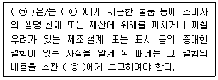
- ㉠ 사업자, ㉡ 소비자, ㉢ 대통령
- ㉠ 사업자, ㉡ 소비자, ㉢ 중앙행정기관의 장
- ㉠ 제조자, ㉡ 구매자, ㉢ 소비자보호원의 장
- ㉠ 소비자, ㉡ 중간상, ㉢ 소비자보호원의 장
- ㉠ 중간상, ㉡ 소비자, ㉢ 해당 지역 기관장
(정답률: 48%)
4. 유통산업발전법에 명시된 유통관리사의 직무로 옳지 않은 것은?
- 유통경영·관리와 관련한 계획·조사·연구
- 유통경영·관리와 관련한 상담·자문
- 유통경영·관리와 관련한 교육
- 유통경영·관리 기법의 향상
- 유통경영·관리와 관련한 진단·평가
(정답률: 42%)
5. 간접유통이면서 동시에 점포유통인 유형으로만 올바르게 묶인 것은?
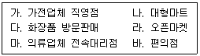
- 가, 나, 마, 바
- 가, 나, 바
- 나, 바
- 가, 마
- 다, 라
(정답률: 47%)
6. 다음 글상자에서 설명하는 용어로 옳은 것은?
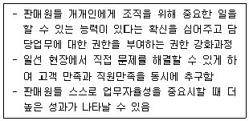
- 직무확대
- 공감적 경청
- 셀프리더십(self leadership)
- 권한 부여(empowerment)
- 솔선수범
(정답률: 65%)
7. 판매예측방법 중 객관적이면서 정량적인 방법에 해당하는 것은?
- 지수평활법
- 델파이법
- 영업사원 예측합계법
- 소비자 구매의도조사법
- 경영진 의견법
(정답률: 50%)
8. ( ㉠ ), ( ㉡ )안에 들어갈 용어로 옳은 것은?
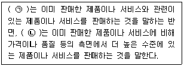
- ㉠ 추가판매, ㉡ 상향판매
- ㉠ 상향판매, ㉡ 추가판매
- ㉠ 교차판매, ㉡ 상향판매
- ㉠ 상향판매, ㉡ 교차판매
- ㉠ 관련판매, ㉡ 고급판매
(정답률: 55%)
9. ( ㉠ ), ( ㉡ ) 안에 들어갈 용어로 옳은 것은?
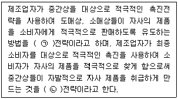
- ㉠ 광고, ㉡ 판촉
- ㉠ 푸쉬(push), ㉡ 풀(pull)
- ㉠ 풀(pull), ㉡ 푸쉬(push)
- ㉠ 수비, ㉡ 공격
- ㉠ 판촉, ㉡ 광고
(정답률: 64%)
10. 다음 그림에서 나타내는 소매업 발전이론은?
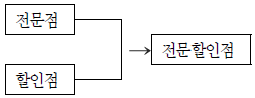
- 아코디언이론
- 소매수레바퀴이론
- 변증법적이론
- 소매수명주기이론
- 진공지대이론
(정답률: 65%)
11. 화주기업의 고객서비스 향상, 물류비 절감, 물류활동의 효율성 향상 등의 목표를 달성할 수 있도록 물류사업자가 공급체인상의 물류기능 전체 혹은 일부를 대행, 처리하는 물류서비스를 지칭하는 용어는?
- 제1자물류
- 제2자물류
- 제3자물류
- 제4자물류
- 제5자물류
(정답률: 69%)
12. 제조업체를 위해 수행하는 도매상의 기능( ㉠ )과, 소매상을 위해 수행하는 도매상의 기능( ㉡ )이 올바르게 나열된 것은?
- ㉠ 구색맞춤기능, ㉡ 소단위 판매기능
- ㉠ 주문처리기능, ㉡ 구색맞춤기능
- ㉠ 기술지원기능, ㉡ 시장정보제공기능
- ㉠ 재고유지기능, ㉡ 시장확대기능
- ㉠ 구색맞춤기능, ㉡ 소매상서비스기능
(정답률: 44%)
13. 대형 할인점(대형마트)에 대한 설명으로 옳지 않은 것은?
- 주로 중저가 브랜드 취급
- 다점포 방식으로 인한 제조업체에 대한 강력한 구매력 보유
- 셀프서비스 판매 방식
- 주로 High/Low 가격전략 구사
- 구색측면의 편리성 추구
(정답률: 53%)
14. 유통의 기본개념에 대한 설명으로 가장 옳지 않은 것은?
- 유통의 기본활동은 상품이나 서비스의 소유권을 이전하는 활동이다.
- 유통은 생산자와 소비자 간의 간격을 메워주고 여러가지 효용을 창조하는 활동이다.
- 유통경로내 중간상은 거래횟수 및 거래관계를 확대하고 다변화하여, 수요자에게 다양한 상품 및 서비스를 제공한다.
- 유통경로는 상품 및 서비스를 생산자로부터 소비자에게 이전시키는 가치사슬 과정에 참여하는 모든 개인 및 기관을 말한다.
- 유통기관들은 소비자와 생산자 양쪽의 정보를 통합 전달하여 정보탐색비용을 줄이는 역할을 한다.
(정답률: 43%)
15. 서로 연관성 있는 소수의 상품계열만을 집중적으로 취급하는 도매상으로서 의약품도매상, 가구도매상, 철물도매상 등을 예로 들 수 있는 도매상의 유형으로 옳은 것은?
- 일반잡화도매상
- 한정상품도매상
- 전문상품도매상
- 현금거래도매상
- 직송도매상
(정답률: 37%)
16. 의류, 가전, 장난감 등 한 가지(또는 한정된) 상품에 전문화된 할인업태로서, 비용 절감과 저마진 정책 등으로 할인점보다 훨씬 저렴한 가격으로 판매하는 소매업태는?
- 전문점
- 백화점
- 회원제도매클럽
- 카테고리킬러
- 슈퍼슈퍼마켓
(정답률: 85%)
17. 판매담당자가 가져야 할 자세와 행동으로 가장 옳지 않은 것은?
- 상품지식이나 업무지식을 꾸준히 습득한다.
- 자신만의 독특한 개성을 살려 노하우를 정립한다.
- 자신만의 접객 경험을 확대 해석하여 일반화한다.
- 창의적이고 적극적인 사고와 행동을 습관화한다.
- 더 나은 판매기술을 익히고 실행한다.
(정답률: 72%)
18. 고객 컴플레인 예방을 위한 판매담당자의 선행지침으로 가장 옳지 않은 것은?
- 식품은 정확히 계량하여 정확한 양과 가격으로 판매한다.
- 도자기나 전자제품처럼 쉽게 파손되는 물품은 배달시 안전하게 포장한다.
- 의류는 사이즈를 확인하고 탈색 및 오염이 없는지 점검해야 한다.
- 조용한 거래를 위해 얼마를 받았고 거스름돈은 얼마인지의 금전확인은 말로 하지 않는다.
- 선물상품인 경우는 가격표를 제거한 후 포장한다.
(정답률: 77%)
19. 기업이 집약적 유통경로를 활용하는 경우, 중간상에 대한 통제가 어려워져서 궁극적으로 손실을 보게 되는 포화효과(effects of saturation)가 발생할 수 있다. 이와 관련된 내용으로 옳지 않은 것은?
- 중간상의 이익감소
- 중간상의 제조업체에 대한 확신 감소
- 중간상의 제품 가격 인상
- 소비자에 대한 중간상의 지원 감소
- 소비자의 만족 감소
(정답률: 47%)
20. 유통기능을 크게 3가지로 구분하면 소유권 이전 기능, 물적 유통 기능, 조성 기능으로 나눌 수 있다. 이 중 소유권 이전 기능에 해당하는 활동으로 올바르게 묶인 것은?
- 포장활동과 유통가공활동
- 구매활동과 판매활동
- 표준화활동과 금융활동
- 수송활동과 보관활동
- 위험부담활동과 시장정보수집활동
(정답률: 75%)
2과목: 판매 및 고객관리
21. 소매점 판매 및 경영에 대한 설명으로 가장 옳지 않은 것은?
- 제품 사용을 위한 기능이 복잡한 경우에는 전담 판매원을 배치하는 것이 효과적이다.
- 고객의 구매를 촉진하기 위해 종업원 동선은 될 수 있는 한 길게 잡는 것이 좋다.
- 고객은 소매점의 정보를 수용하는 동시에 소매점에게 정보를 제공하는 원천이 되기도 한다.
- 고객에게 상품을 권할 때에는 강요가 아닌 보다 나은 구매를 위해 도와드린다는 기분으로 하여야 한다.
- 고객이 반품을 원하는 경우에는 신속하게 처리하여 고객 만족도를 높이고 추후 재구매율을 증가시키도록 노력해야 한다.
(정답률: 80%)
22. 카테고리 수명주기의 변화상 여러 시즌에 걸쳐 특정상품의 판매가 일어나며 특정시즌에서 다음 시즌으로 바뀔 때 극적인 판매 변화가 일어나는 상품은?
- 일시성상품
- 유행성상품
- 지속성상품
- 계절성상품
- 소비성상품
(정답률: 63%)
23. 고객을 대상으로 측정하는 서비스 품질이 측정하기 쉽지 않은 이유에 대한 설명으로 옳지 않은 것은?
- 서비스 품질의 개념이 객관적이기 때문에 주관화하여 측정하기가 어렵기 때문이다.
- 서비스 특성상 생산과 소비가 동시에 이루어지기 때문에 서비스 품질은 서비스의 전달이 완료되기 이전에는 검증되기가 어렵기 때문이다.
- 서비스 품질을 측정하려면 고객에게 물어봐야 하는데, 고객으로부터 데이터를 수집하는 일이 시간과 비용이 많이 들며 회수율도 낮기 때문이다.
- 고객은 서비스 프로세스의 일부이며 변화를 일으킬 수 있는 중요한 요인이기도 하므로 서비스 품질 측정에 본질적인 어려움이 있기 때문이다.
- 모든 경우에 적용될 수 있는 서비스의 품질을 정의하는 것은 어렵기 때문이다.
(정답률: 43%)
24. POP(Point Of Purchase)에 대한 내용으로 옳지 않은 것은?
- 진열시점 후의 광고로서 소비자가 상품을 구매한 후 사용방법을 알려주기 위한 것이 주된 목적이다.
- 상품이 진열된 장소에서 쇼핑고객을 대상으로 하기 때문에 실질적인 상품을 소구한다.
- POP는 연결판매를 통해 객단가를 상승시켜 매출을 증대시키는 효과가 있다.
- 너무 많은 POP는 매장을 산만하게 만들 수 있다.
- 가격정보제공, 행사정보제공 등의 내용을 포함하기도 한다.
(정답률: 46%)
25. 마케팅 믹스(marketing mix)를 구성하는 요소로 옳지 않은 것은?
- 포지셔닝(Positioning)
- 제품(Product)
- 가격(Price)
- 유통(Place)
- 촉진(Promotion)
(정답률: 71%)
26. ( ㉠ ), ( ㉡ )안에 들어갈 용어로 옳은 것은?
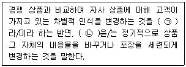
- ㉠ 포지셔닝, ㉡ 리뉴얼
- ㉠ 포지셔닝, ㉡ 스타일 변경
- ㉠ 리포지셔닝, ㉡ 리뉴얼
- ㉠ 재활성화, ㉡ 스타일 변경
- ㉠ 리포지셔닝, ㉡ 상품 믹스
(정답률: 62%)
27. 다음 사례의 M기업이 실행한 브랜드 전략과 관련된 내용으로 가장 부합하지 않는 것은?
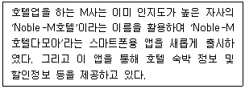
- 기존의 높은 인지도를 확장하여 새로운 서비스의 성공가능성을 높인다.
- 새로운 서비스가 성공하면 기존 서비스에 대한 긍정적 반향효과가 발생한다.
- 두 서비스간 유사성이 낮으면 실패할 가능성이 높으므로 서비스간 유사성을 고려한다.
- 적은 비용으로 새로운 서비스의 매출 및 수익성 증대를 도모할 수 있다.
- 신규 서비스가 실패하더라도 기존 브랜드의 이미지에 영향을 미치지는 않는다.
(정답률: 69%)
28. 올림픽시즌을 맞이하여 특별한 매장진열 방식으로 판매를 촉진하고 쇼핑을 더욱 즐겁게 만드는 진열방식은?
- 구색진열
- 테마별진열
- 패키지진열
- 컷케이스진열
- 통진열
(정답률: 62%)
29. 인적판매원의 역할로 가장 옳지 않은 것은?
- 일상적인 시장정보수집을 위한 역할
- 고객파악과 유지를 위한 역할
- 고객문제 해결을 위한 역할
- 직원할인 제공을 위한 역할
- 지속적인 서비스 제공을 위한 역할
(정답률: 70%)
30. 다음 사례에서 나타난 코센(Kossen)의 판매저항 처리방법은?
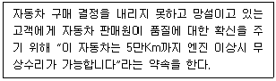
- 타이밍 지적법
- 실례법
- 보증법
- 자료전환법
- 비교대조법
(정답률: 70%)
31. 판매를 위한 정보 중 고객에 관한 정보에 해당하지 않는 것은?
- 고객의 특성에 관한 정보
- 고객의 소비, 사용의 관습에 관한 정보
- 경쟁사의 고객유인에 관한 정보
- 구매자, 구매결정자, 소비 및 이용자에 관한 정보
- 고객의 구매동기에 관한 정보
(정답률: 67%)
32. 이탈고객에 대한 설명으로 가장 옳지 않은 것은?
- 고객이탈율은 1년 동안 떠나는 고객의 수를 신규고객의 수로 나눈 값이다.
- 이탈고객이 제공하는 정보를 활용하여 이탈고객이 발생하지 않도록 노력해야 한다.
- 완전히 이탈한 고객만이 아닌 어느 정도 이용률이 떨어진 고객도 관리해야 한다.
- 고객이탈율 제로문화를 형성하기 위해 노력해야 한다.
- 휴면고객의 정보를 활용하여 고객으로 환원시키도록 노력해야 한다.
(정답률: 69%)
33. 상품 관여도에 대한 내용으로 옳은 것은?
- 상품 관여도는 주어진 상품에 대한 소비자의 중요성이나 관심정도를 말한다.
- 적극적인 정보 탐색을 필요로 하는 상품은 저관여 상품이라고 한다.
- 편의품은 고관여상품이다.
- 전문품은 저관여상품이다.
- 고가의 악기, 명품은 저관여상품에 속한다.
(정답률: 62%)
34. 점포 레이아웃 유형 중 격자(grid)형에 대한 설명으로 옳은 것을 모두 고르면?
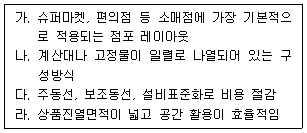
- 가, 라
- 가, 나
- 나, 다
- 나, 다, 라
- 가, 나, 다, 라
(정답률: 49%)
35. 다음은 서비스 특성에 따른 마케팅 시사점을 짝지은 것이다. ( ㉠ ), ( ㉡ )에 들어갈 내용으로 옳은 것은?
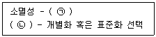
- ㉠ 유형적 특성 강조, ㉡ 이질성
- ㉠ 다양한 정보제공, ㉡ 무형성
- ㉠ 서비스 아웃소싱, ㉡ 생산과 소비의 동시성
- ㉠ 예약시스템 활용, ㉡ 이질성
- ㉠ 상호작용 중시, ㉡ 무형성
(정답률: 35%)
36. 다음은 서비스 제공 실패로 인해 발생하는 고객불평에 효과적으로 대응하는 공정성에 관한 내용이다. ( ㉠ ), ( ㉡ )에 들어갈 용어로 올바르게 짝지어진 것은?
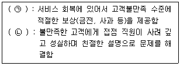
- ㉠ 절차 공정성, ㉡ 상호작용 공정성
- ㉠ 절차 공정성, ㉡ 분배 공정성
- ㉠ 결과 공정성, ㉡ 절차 공정성
- ㉠ 분배 공정성, ㉡ 절차 공정성
- ㉠ 결과 공정성, ㉡ 상호작용 공정성
(정답률: 33%)
37. 소비자를 대상으로 한 판매 촉진방법에 대한 설명으로 옳지 않은 것은?
- 샘플은 제품을 한 번 사용하도록 유도하기 위한 촉진방법으로 효과적이지만 비용이 많이 드는 방법이다.
- 쿠폰은 쿠폰소지자에게 일정기간 동안 정상가격에서 일정한 금액을 할인해 주는 방법이다.
- 프리미엄은 소비자가 제조회사에게 구매와 관련된 증빙서류를 보내면 회사는 구매한 금액의 일부를 반환해 주는 방법이다.
- 현상경품은 일정한 기간 동안에 어떤 상품을 구입한 소비자 중에서 일부를 추첨하여 현금이나 물건을 주는 것을 말한다.
- 광고판촉물은 광고주의 이름, 로고, 메시지 등을 표시하여 고객에게 주는 물건으로 티셔츠, 펜, 잔, 열쇠고리 등의 아이템을 활용한다.
(정답률: 65%)
38. 매슬로(Abraham Maslow)가 제시한 인간의 욕구에 대한 설명으로 가장 옳지 않은 것은?
- 의식주 해결에 관한 생리적 욕구가 있다.
- 생활 안정과 안전 등 안전성에 대한 욕구가 있다.
- 집단 소속감 등의 사회적 욕구가 있다.
- 자존심이나 명예, 지위 등 자아실현의 욕구가 있다.
- 최상위 욕구로 자아실현의 욕구가 있다.
(정답률: 28%)
39. 소매상과 고객 간에 발생할 수 있는 전환비용(switching cost)에 대한 설명으로 옳지 않은 것은?
- 전환비용은 실제로 있을 수도 있고, 지각된 비용일 수도 있다.
- 전환비용은 금전적, 비금전적 비용 모두를 포함한다.
- 전환비용은 시작비용, 탐색비용, 학습비용, 계약비용 등으로 나누어진다.
- 서비스가 경험재일 경우보다 탐색재일 경우 탐색비용이 더 높아진다.
- 소매상은 고객이 이탈하는 것을 방지하기 위해 소비자의 전환비용을 증가시키려 한다.
(정답률: 23%)
40. 제품 혹은 서비스의 성능이나 기능보다 사회적인 수용, 개인존중, 자아실현 측면의 불만을 의미하는 것은?
- 효용 불만
- 상황적 불만
- 균형 불만
- 심리적 불만
- 관계적 불만
(정답률: 48%)
41. POS 시스템으로부터 수집한 정보의 활용에 해당하지 않는 것은?
- 고객들의 구매빈도 분석
- 시간대별 매출 분석
- 조달물류비 분석
- 효과적인 진열기법 분석
- 판촉효과 분석
(정답률: 46%)
42. 상품진열에 관한 내용이다. ( ㉠ ), ( ㉡ )안에 들어갈 알맞은 용어는?
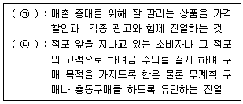
- ㉠ 판매촉진 진열, ㉡ 윈도우 진열
- ㉠ 점포내 진열, ㉡ 윈도우 진열
- ㉠ 판매촉진 진열, ㉡ 고객중심 진열
- ㉠ 고객중심 진열, ㉡ 구매시점 진열
- ㉠ 점포내 진열, ㉡ 구매시점 진열
(정답률: 66%)
43. 유통업체가 개별적으로 개발한 상표로서, 이 상표를 이용하여 유통업체가 독자적으로 상품을 기획하고 제조, 가공하게 되는 상표를 무엇이라고 하는가?
- DCB(Double Chop Brand)
- RB(Retail Brand)
- PB(Private Brand)
- UB(Union Brand)
- NB(National Brand)
(정답률: 52%)
44. 진실의 순간(moments of truth : MOT)에 대한 설명으로 가장 옳지 않은 것은?
- 고객의 서비스 품질 인식에 결정적 역할을 하기 때문에 결정적 순간으로 불린다.
- 진실의 순간을 관리하기 위해서 조직의 상층부에 권한을 집중하고, 명령계통을 일원화한다.
- 지극히 짧은 순간이지만, 고객의 서비스 인상을 좌우한다.
- 기업의 여러 자원과 고객이 직접 혹은 간접적으로 만나는 순간이며, 고객이 기업의 서비스를 평가하는 순간이다.
- 고객접점에 있는 직원의 동기부여와 고객응대력을 높이는 것이 중요하다.
(정답률: 64%)
45. 상품 포장의 목적에 관한 설명으로 가장 옳지 않은 것은?
- 포장은 상품 운반을 용이하게 해준다.
- 포장은 상품을 보호한다.
- 포장은 상품교환을 용이하게 해준다.
- 포장은 제품정보를 효율적으로 전달하는 커뮤니케이션의 효과를 위하여 한다.
- 포장은 디자인, 형태, 사이즈 등을 잘 조합하여 제품이미지를 소비자에게 전달하기 위하여 한다.
(정답률: 54%)